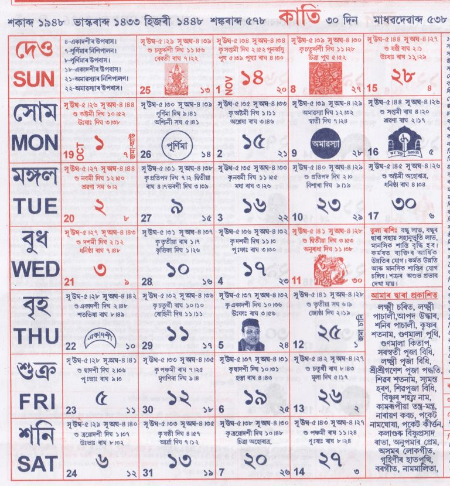

|
কাতি
|
|

|
১ কাতি - মহাষ্টমী কল্পাৰম্ভ, সন্ধিপূজা, বলিদান, বীৰাষ্টমী ব্ৰত।
২ - মহানবমী পূজা।
৩ - দশমী পূজা সমাপন, বিসৰ্জন, বিজয়া দশমী।
৪ - বিভিন্ন সত্ৰত তিথি অনুষ্ঠান, ডিব্ৰুগড়ত শহীদ দিবস।
৫ - সত্ৰীয়া সংস্কৃতি স্মৃতি দিৱস।
৭ - লক্ষ্মী পূজা, কোজাগৰী ৰাতি।
৮ - বিভিন্ন সত্ৰত তিথি অনুষ্ঠান।
১০ - ধৰ্মপ্ৰচাৰক স্মৃতি।
১১ - সত্ৰ অনুষ্ঠান।
১২ - মনসা পূজা।
১৩ - কীৰ্ত্তন মহোৎসৱ, ৰাষ্ট্ৰীয় সংহতি দিৱস।
১৫ - সত্ৰাধিকাৰ স্মৃতি।
১৬ - সমাজসেৱী স্মৃতি।
১৭ - সত্ৰ তিথি অনুষ্ঠান।
১৮ - ভূপেন হাজৰিকা স্মৃতি দিৱস।
১৯ - ধনতেৰাছ।
২০ - ধন ত্ৰয়োদশী।
২১ - কালী পূজা, দীপাৱলী।
২৩ - দ্যুৎ প্ৰতিপদ।
২৪ - ভাতৃ দ্বিতীয়া।
২৫ - পালনাম আৰম্ভ।
২৬ - উৰুছ মোবাৰক।
২৭ - শিশু দিৱস।
২৮ - ছট পূজা।
২৯ - সাহিত্য দিৱস।
৩০ - কাৰ্ত্তিক পূজা, গো-পূজা উৎসৱ।
|
|
ৰবিশুদ্ধি: বৃষ, সিংহ, ধনু, মকৰ ৰাশিৰ ১২ তাৰিখৰ পৰা বৃষ, মিথুন, সিংহ, কন্যা, ধনু, মকৰ আৰু কুম্ভ।
|
|
গুৰুশুদ্ধি: মিথুন, কন্যা, বৃশ্চিক, মকৰ, মীন; ১৩ কাতিৰ পৰা মেষ, কৰ্কট, তুলা, ধনু আৰু কুম্ভ।
|
|
জ্যোতিষতত্ত্ব: এই মাহত জন্মা ব্যক্তি বিনয়ী, সৎকর্মপ্ৰিয়, বহুভাষী আৰু চঞ্চলমনা হয়।
|
শুভকাৰ্য্য:
বিবাহ: —
পঞ্চামৃত: ২৫
সাধভক্ষণ: ২৮, ২৫, ২৯
নামকৰণ: ৮, ১২, ১৮, ১৯, ২৪, ২৫, ২৯
মুখ্যান্নপ্ৰাশন: ২৪, ২৫
গৃহপ্ৰৱেশ: ২, ১৩, ১৮, ১৫, ১৬, ১৭, ১২, ৯, ৩০
|